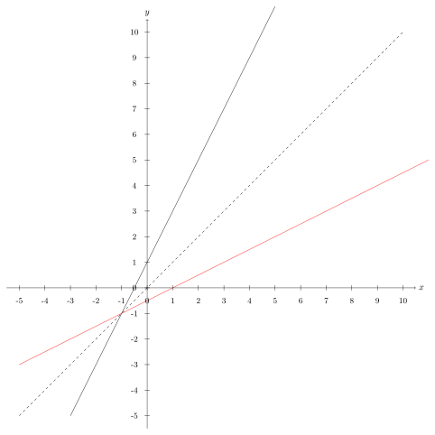
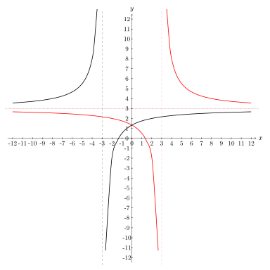

9. Meira um föll¶
9.1. Andhverfur¶
Þegar kemur að andhverfumen: inverse.
Smelltu fyrir ítarlegri þýðingu.
Skoðum fyrst fallið \(f: \mathbb{R}_+ \to \mathbb{R}_+, \quad f(x)=x^2\).
Við vitum að andhverfa \(f(x)=x^2\) er \(f^{-1}(x)=\sqrt{x}\) vegna þess að:
Ef við teiknum gröf fallanna fáum við:

Hér sjáum við að rauða grafið, \(\sqrt{x}\), er spegilmynd svarta grafsins, \(x^2\), um punktalínuna.
Note
Graf andhverfu falls er spegilmynd grafs fallsins um línuna \(y=x\).
Skoðum næst \(y=2x+1\) eða \(f(x)=2x+1\). Reiknum andhverfuna:
þá er \(f^{-1}(x) = \frac{1}{2} x - \frac{1}{2}\).
Teiknum nú línurnar:
{kind=link}
Hér er rauða línan andhverfa \(f(x)\), við sjáum að línan speglast nákvæmlega um \(y=x\) eins og í fyrra dæminu \(x^2\).
Hægt er að sannfæra sig á þessu með því að horfa á einfaldan feril sem fer í gengum 6 þekkta punkta,
Séu þessir punktar tengdir saman með strikum fæst svarti ferilinn sem við sjáum hér að neðan. Rauði ferillinn myndast þegar við speglum svarta yfir \(y=x\).
Speglum punktinum \((4, 2.5)\) yfir \(y=x\) , hann lendir í punktinum \((2.5,4)\) og strikið á milli þeirra er hornrétt á \(y=x\).

Við getum því speglað punktunum um línuna með því að víxla á \(x\)- og \(y\)-hnitum punktanna. Andhverfi ferillinn fer því á milli punktana \((1, 0.5), (1,1.5), (2,2.5), (2.5,4), (2.5,3)\) og \((3.5,4)\).
Skoðum að lokum \(g(x) = \ln(x+2)\). Reiknum andhverfuna:
Þá er andhverfa fallið \(g^{-1}(x) = e^x -2\). Á þessari mynd má sjá gröf ferlanna, \(g(x)\) er svart en \(g^{-1}(x)\) rautt.

9.2. Eintæk og átæk föll¶
Skoðum föll \(f: X \to Y\).
Mengið \(X\) kallast formengien: argument domain.
Smelltu fyrir ítarlegri þýðingu.
Smelltu fyrir ítarlegri þýðingu.
Í formengi falls \(y=f(x)\) eru þær tölur sem við getum sett inn í fallið (\(x\) -in) en í bakmenginu eru þær tölur sem geta komið út (\(y\) -in).
9.2.1. Átæk föll¶
Látum \(f: X \to Y\) vera fall.
Látum \(y_0 \in Y\) vera stak í bakmenginu. Oft þurfum við að vita hvort hægt sé að finna einhverja lausn á jöfnunni
það er að segja, hvort hægt sé að finna eitthvað \(x_0 \in X\) þannig að \(f(x_0)=y_0\).
Ef þessi jafna hefur lausn fyrir öll stökin í bakmenginu þá segjum við að fallið sé átækten: surjective.
Smelltu fyrir ítarlegri þýðingu.
9.2.2. Skilgreining¶
Fall \(f: X \to Y\) er sagt vera átækt ef fyrir sérhvert \(y \in Y\) er til \(x \in X\) þannig að \(f(x)=y\).
Skoðum mengjamyndir til að sjá þessa tegund af vörpun fyrir okkur. Hér er \(X\) skilgreiningarmengið og \(Y\) myndmengið.

Við sjáum að öll stökin í myndmenginu eru með í vörpuninni og hér er í lagi að fleiri en eitt stak í skilgreiningarmenginu varpast á sama stak í myndmenginu.
Hér er dæmi um vörpun sem er ekki átæk:

Hún er ekki átæk því hér eru tvö stök í myndmenginu sem eru ekki með í vörpuninni.
Tip
1. Skoðum fallið \(f: \mathbb{R} \to \mathbb{R}\), \(f(x)=x^2\).
Tökum eftir að bakmengið er allt \(\mathbb{R}\), en \(x^2\) verður aldrei neikvæð tala. Til dæmis er \(-1\) stak í bakmenginu, en jafnan \(f(x)=-1\), eða \(x^2=-1\) hefur enga lausn í rauntölunum. Fallið er því ekki átækt.
2. Skoðum fallið \(g: \mathbb{R} \to \mathbb{R}_+\), \(g(x)=x^2\).
Hér er bakmengið mengi allra jákvæðra rauntalna. Fyrir sérhverja jákvæða rauntölu \(a\) hefur jafnan \(x^2=a\) lausn. Hún fæst með kvaðratrót. Fallið er því átækt.
3. Skoðum fallið \(h: \mathbb{R} \to \mathbb{R}\), \(h(x)=0\).
Sérhvert stak varpast í stakið \(0\) í bakmenginu. Til dæmis, fyrir stakið \(1\) í bakmenginu þá er ekki til nein lausn á jöfnunni \(h(x)=1\) þar sem það gefur \(0=1\) sem er fráleitt. Svo fallið er ekki átækt.
9.2.3. Eintæk föll¶
Skoðum aftur jöfnuna
Oft getur verið gagnlegt að vita hvort þessi jafna hafi margar lausnir.
Við segjum að fallið sé eintækten: injective.
Smelltu fyrir ítarlegri þýðingu.
9.2.4. Skilgreining¶
Fall \(f: X \to Y\) er sagt vera eintækt ef fyrir sérhvert \(y \in Y\) er til í mesta lagi eitt \(x \in X\) þannig að \(f(x)=y\).
Það er, ef \(f(x_1)=f(x_2)\) þá er \(x_1=x_2\).
Skoðum aftur mengjamyndir til að sjá þessa tegund af vörpun fyrir okkur. Hér er \(X\) skilgreiningarmengið og \(Y\) myndmengið.

Við sjáum að hvert stak í skilgreiningarmenginu á sér stak í myndmenginu og það er í lagi að sum stök í myndmenginu séu ekki með í vörpuninni.
Hér er dæmi um vörpun sem er ekki eintæk:

Hér varpast tvö stök í skilgreiningarmenginu á sama stak í myndmenginu. Takið eftir að þessi vörpun er hvorki eintæk né átæk.
Tip
1. Skoðum fallið \(f: \mathbb{R} \to \mathbb{R}\), \(f(x)=x^2\).
Þetta fall er ekki eintækt. Til dæmis gildir \(f(-2)=f(2)=4\), það er jafnan \(f(x)=4\) hefur tvær lausnir.
2. Skoðum fallið \(f: \mathbb{R}_+ \to \mathbb{R}\), \(f(x)=x^2\).
Þetta fall er eintækt, þar sem skilgreiningarmengið inniheldur bara jákvæðar tölur. Ef \(x_1\) og \(x_2\) eru ólíkar tölur í \(\mathbb{R}_+\), þá eru \(x_1^2\) og \(x_2^2\) ólíkar.
3. Skoðum fallið \(g: \mathbb{R} \to \mathbb{R}\), \(g(x)=x\).
Þetta fall er eintækt. Ljóst er að ólík stök úr formenginu varpast í ólík stök í bakmenginu. Ef \(y_1 \not= y_2\) þá gildir að \(g(y_1) \not= g(y_2)\).
9.2.5. Gagntæk föll¶
9.2.6. Skilgreining¶
Fall \(f: X \to Y\) er sagt vera gagntækten: bijective.
Smelltu fyrir ítarlegri þýðingu.
9.2.7. Regla¶
Fall á sér andhverfu þá og því aðeins að það sé gagntækt.
Skoðum mengjamynd til að sjá þessa tegund af vörpun fyrir okkur:

Við sjáum að öll stökin í myndmenginu eru með í vörpuninni þannig að vörpunin átæk. Hvert stak í skilgreiningarmenginu varpast á nákvæmlega eitt stak í myndmenginu þannig að vörpunin er eintæk. Fallið er því gagntækt þar sem það er bæði átækt og eintækt.
Tip
Við höfum séð að fallið \(f: \mathbb{R} \to \mathbb{R}\), \(f(x)=x^2\) er hvorki eintækt né átækt. Það á sér því ekki andhverfu.
Skoðum til dæmis stakið \(9\) í bakmenginu. Stökin í formenginu sem varpast í \(9\) eru tvö, það er \(f(3)=9\) og \(f(-3)=9\). Til þess að ,,fara til baka‘‘ þá þyrftum við að úthluta \(9\) stökunum \(3\) og \(-3\), þ.e. stökunum \(\pm \sqrt{9}\). Andhverfan getur því ekki verið fall, því samkvæmt skilgreiningu á falli fær hvert stak í formenginu úthlutað nákvæmlega einu staki í bakmenginu, en í þessu tilfelli eru þau tvö.
9.3. Samskeyting falla¶
9.3.1. Skilgreining¶
Látum \(f: X \to Y\) og \(g: Y \to Z\) vera föll. Við skilgreinum þá vörpun \(g \circ f: X \to Z\) með:
fyrir öll \(x \in X\). Þetta kallast samskeytt fallen: composite function.
Smelltu fyrir ítarlegri þýðingu.

Note
Bakmengi \(f\) og formengi \(g\) þarf að vera það sama. Annars gengur skilgreiningin ekki upp.
Tip
Látum \(f:\mathbb{R} \to \mathbb{R}\) vera gefið með \(f(x)=x^2+x\) og \(g:\mathbb{R} \to \mathbb{R}\) vera gefið með \(g(x)=x+3\)
Finnum \(f\circ g\) og \(g\circ f\). Höfum
og
9.4. Nokkur mikilvæg föll¶
9.4.1. Vísisföll¶
Vísisfallen: power function.
Smelltu fyrir ítarlegri þýðingu.
þar sem \(a \geq 0\) er rauntala.
Dæmi um vísisfall er \(f(x)=2^x\). Þá er \(f(1)=2\), \(f(2)=4\) og \(f(3)=8\) og \(f(4)=16\) o.s.fr.v.
Graf þess má sjá hér að neðan.

9.4.2. Lograr¶
Látum \(a\) vera jákvæða rauntölu og \(f: \mathbb{R} \to \mathbb{R}_+\) vera vísisfall gefið með
Þetta fall á sér andhverfu sem við köllum \(a\)- logrannen: logarithm.
Smelltu fyrir ítarlegri þýðingu.
Samkvæmt skilgreiningu á andhverfu er því \(a\)- logrinnen: logarithm.
Smelltu fyrir ítarlegri þýðingu.
og
Note
Óformlega getum við hugsað um töluna \(\log_a(x)\) þannig: „Í hvaða veldi þarf að setja \(a\) svo að útkoman verði \(x\)?“
Tip
1. Reiknum \(\log_2(8)\). Í töluðu máli er spurningin þessi:
„Í hvaða veldi þarf að setja tvo svo að útkoman verði átta?“
Auðvelt er að reikna að \(2^3=8\), svarið er því \(3\) og við skrifum \(\log_2(8)=3\)
2. Reiknum \(\log_3(81)\).
Auðvelt er að staðfesta að \(3^4=81\), svo \(\log_3(81)=4\)
3. Reiknum \(\log_9(1)\).
Athugum að um sérhverja tölu \(a\) gildir \(a^0=1\), sér í lagi er \(9^0=1\) svo \(\log_9(1)=0\).
Note
10 - logrinn er oft skrifaður \(\log(x)\) frekar en \(\log_{10}(x)\) . Þessi logri er mikið notaður og yfirleitt er sérstakur takki á reiknivélum til þess að reikna hann.
9.4.2.1. Lograreglur¶
Fyrir \(a,b,x,y\in \mathbb{R}_+\) og \(r \in \mathbb{R}\) gildir:
\(\qquad \log_a(1)=0\)
\(\qquad \log_a(1/x)=-\log_a(x)\)
\(\qquad \log_a(xy)=\log_a(x)+\log_a(y)\)
\(\qquad \log_a(x/y)=\log_a(x)-\log_a(y)\)
\(\qquad \log_a(x^r)=r\log_a(x)\)
\(\qquad \log_a(x)=\dfrac{\log_b(x)}{\log_b(a)}\).
Tip
1. Reiknum \(\log_5(50)+\log_5(\frac{1}{2})\).
Við notum reiknireglur tvö, þrjú, og fjögur:
\[\begin{aligned}\log_5(50)+\log_5(\frac{1}{2})&=\log_5(5^2\cdot 2)-\log_5(2)\\&=\log_5(5^2)+\log_5(2)-\log_5(2)\\&=\log_5(5^2)=2\end{aligned} \]2. Reiknum \(\log_2(49)\cdot \log_7(2)\)
Notum reiknireglu sex:
\[\begin{aligned} \log_2(49)\cdot \log_7(2)&=\dfrac{\log_7(49)}{\log_7(2)}\cdot \log_7(2)\\ &=\log_7(49)\\ &=\log_7(7^2)=2 \end{aligned} \]3. Reiknum \((\log_{12}(1))^{12}\)
Notum reiknireglu eitt:
\[(\log_{12}(1))^{12}=0^{12}=0 \]4. Reiknum \(\log_7(22)\)
Notum reiknireglu sex og setjum \(b=10\), stingum stærðinni \(\log(22)/\log(7)\) inn í vasareikninn og fáum
9.4.3. Náttúrulega veldisvísisfallið og nátturulegi logrinn¶
Náttúrulega veldisvísisfallið er skilgreint sem
þar sem \(e \approx 2.71828182846...\) er óræð tala.
Skoðum graf fallsins

Þá er andhverfa \(f(x) = e^x\) skilgreind sem \(f^{-1}(x) = \log_e (x)\) og yfirleitt skrifað
Fallið \(\ln(x)\) er kallað náttúrulegi logrinn

Sjáum hér að \(\ln(x)\) er \(e^x\) speglað um \(y=x\).

Sömu reglur gilda um náttúrulega logrann og um aðra logra.
9.4.3.1. Lograreglur¶
Fyrir \(x,y\in \mathbb{R}_+\) og \(r \in \mathbb{R}\) gildir:
\(\qquad \ln(1)=0\)
\(\qquad \ln(xy)=\ln(x)+\ln(y)\)
\(\qquad \ln(x/y)=\ln(x)-\ln(y)\)
\(\qquad \ln(x^r)=r\ln(x)\)
9.4.4. Ræð föll¶
Ef \(r\) er fall sem tákna má með formúlu af gerðinni
þá segjum við að \(r\) sé rætt fallen: rational function.
Smelltu fyrir ítarlegri þýðingu.
Smelltu fyrir ítarlegri þýðingu.
Þetta er bara önnur leið til að segja að fallið \(r\) kallist rætt fall ef til eru margliður \(p\) og \(q\) þannig að \(r=\frac{p}{q}\).
9.4.4.1. Myndrænt¶
Skoðum einföld ræð föll á forminu:
Ef stuðlarnir \(a,b,c, \; \text{og} \; d\) eru þekktir er fljótlegt að finna aðfelluren: asymptote.
Smelltu fyrir ítarlegri þýðingu.
Lóðfellan verður í gegnum punktinn á \(x\) - ásnum sem er ekki í skilgreiningarmenginu, það er að segja þar sem deilt væri með núlli. Lóðfella ræðs falls á þessu formi er því línan
Láfellan verður í gegnum punktinn á \(y\) - ásnum sem er ekki í myndmenginu, það er að segja gildið sem fallið getur aldrei tekið. Láfella ræðs falls á þessu formi er því línan
Tip
Skoðum ræða fallið
Hér er \(a= 1, \; b =-2, \; c = 1\) og \(d = 3\).
Þá eru aðfellurnar:
Nú er lítið mál að sjá fyrir sér fallið:

9.4.5. Stofnbrotaliðun¶
Þegar við erum að vinna með ræð föll getur verið þægilegra að liða þau niður áður en unnið er með þau. Þegar margliðan í teljaranum hefur stigið 1 og margliðan í nefnaranum hefur stigið 2 er hægt að gera það svona:
Tip
Liðum
í stofnbrot.
Lausn:
Þáttum nefnarann \(x^2+3x-4\) og fáum \((x+4)(x-1)\). Hér er \(a=3\), \(b=2\), \(\alpha = -4\) og \(\beta=1\).
Reiknum fastana \(A\) og \(B\) :
Því er hægt að skrifa:
Athugum hvort þetta sé rétt með því að leggja brotin saman:
Látum \(p\) og \(q\) vera margliður og látum \(r=\frac{p}{q}\) vera rætt fall. Ef margliðurnar \(p\) og \(q\) eru af háum stigum getur ræða fallið \(r\) oft verið erfitt viðureignar. Þá er gagnlegt að geta skrifað \(r\) sem summu af einfaldari ræðum föllum. Eftirfarandi regla getur þá stundum verið gagnleg:
9.4.5.1. Regla¶
Látum \(p\) og \(q\) vera margliður af stigi \(n\) og \(m\).
Gerum ráð fyrir að margliðan \(q\) hafi \(m\) ólíkar rætur \(a_1,a_2,...,a_m\).
Þá er til margliða \(s\) og fastar \(b_1,b_2,...,b_m\) þannig að
Þegar þessari reglu er beitt þá segjumst við vera að stofnbrotaliða ræða fallið \(\frac{p}{q}\).
Stofnbrotaliðum ræða fallið \(\frac{p}{q}\) þar sem \(p\) og \(q\) eru margliður og
er af stigi \(m\).
Finnum allar núllstöðvar margliðunnar \(q\). Ef margliðan hefur færri en \(m\) núllstöðvar hættum við hér, því þá virkar þessi aðferð ekki. Ef \(m\) ólíkar núllstöðvar finnast köllum við þær \(a_1,a_2,...,a_m\).
Deilum margliðunni \(q\) upp í margliðuna \(p\) með afgangi til þess að finna margliður \(s\) og \(p_1\) sem eru þannig að stig \(p_1\) er minna en stig \(q\) og \(p=sq+p_1\). Þá má skrifa:
Skilgreinum nýja margliðu \(q'\) með því að setja
Reiknum út stuðlana \(b_1,b_2,...,b_m\) með formúlunni
Nú má skrifa
Note
Þeir sem eru komnir aðeins lengra í stærðfræði og þekkja diffrun munu taka eftir að í aðferðinni að ofan þá er nýja margliðan \(q'\) afleiðan af margliðunni \(q\).
Tip
Stofnbrotaliðið ræða fallið
Hér er \(p(x)=x^4-2\) og \(q(x)=x^3+2x^2-x-2\).
Finnum núllstöðvar \(q\). \(p/q\)-aðferðin sem lýst var í fyrri kafla segir okkur að við eigum að prófa hvort tölurnar \(-1,1,-2\) eða \(2\) séu núllstöðvar margliðunnar \(q\):
\[q(-1)=0, \qquad q(1)=0, \qquad q(-2)=0, \qquad q(2)=12. \]Hér fundum við þrjár mismunandi núllstöðvar, \(q\) hefur stig \(3\) svo við getum haldið áfram. Við setjum \(a_1=-1, \; a_2=1 \; \text{og} \; a_3=-2\).
Deilum \(q\) uppí \(p\) með afgangi:
{kind=link}
Skilgreinum margliðuna
\[q'(x)=3x^{3-1}+2\cdot 2x^{2-1} - 1x^{1-1}=3x^2+4x-1 \]
Reiknum út:
\[\begin{aligned} b_1&=\frac{p_1(a_1)}{q'(a_1)}\\&=\frac{p_1(-1)}{q'(-1)}\\&=\frac{5\cdot(-1)^2-6}{3\cdot(-1)^2+4\cdot(-1)-1}\\&=\frac{-1}{-2}\\&=\frac{1}{2}\\b_2&=\frac{p_1(a_2)}{q'(a_2)}\\&=\frac{-1}{6}\\b_3&=\frac{p_1(a_3)}{q'(a_3)}\\&=\frac{14}{3}\end{aligned} \]Þá er \(b_1 =\frac{1}{2}, \; b_2 =\frac{-1}{6} \; \text{og} \; b_3=\frac{14}{3}\).
Lausnin okkar er þess vegna:
\[\begin{aligned} \frac{x^4-2}{x^3+2x^2-x-2}&=x-2+\frac{1/2}{x+1}+\frac{-1/6}{x-1}+\frac{14/3}{x+2} \\ &=x-2+\frac{1}{2(x+1)}-\frac{1}{6(x-1)}+\frac{14}{3(x+2)}.\\ \end{aligned} \]
9.5. Ummyndanir¶
Það er mjög mikilvægt að geta teiknað föll og séð þau fyrir sér, meðal annars að geta séð fyrir sér ummyndaniren: transformation.
Smelltu fyrir ítarlegri þýðingu.
9.5.1. Hliðrun¶
Færsla punktsins \((x,y)\) yfir á punktinn \((x+a,y+b)\) kalllast hliðrunen: translation.
Smelltu fyrir ítarlegri þýðingu.
Hliðrunarvigurinn \(\begin{pmatrix} a \\ b \end{pmatrix}\) færir feril fallsins \(f(x)\) yfir í feril fallsins
Tip
Hliðrum \(f(x) = x^2\) um \(\begin{pmatrix} 2 \\ 1 \end{pmatrix}\)
Þessi hliðrun þýðir að hver punktur ferilsins færist um \(2\) til hægri á \(x\)-ásnum og \(1\) upp á \(y\)-ásnum. Þá er nýja hliðraða fallið:
{kind=link}
Sjáum \(g(x)= (x-2)^2 +1\) er í rauðu og hefur hliðrast upp til hægri. Punkturinn \((-2,4)\) færist í \((-2+2,4+1)=(0,5)\).
Tip
Hliðrum \(f(x) = \sin(x)\) um \(\begin{pmatrix} -\frac{\pi}{2} \\ 0 \end{pmatrix}\). Fáum

Hér erum við búin að hliðra sínus um \(\frac{\pi}{2}\) eftir \(x\)-ás og þá fáum við kósínus! Sjá kafla 7 um hornaföll.
9.5.2. Speglun¶
Speglun um \(x\) -ás
Þegar falli \(f(x)\) er speglað um \(x\)-ás fæst fallið \(g(x) = -f(x)\). Tökum sem dæmi \(f(x)=x^2\), þá er speglunin \(g(x) = -f(x) = -x^2\).

Speglun um \(y\) -ás
Þegar falli \(f(x)\) er speglað um \(y\)-ás fæst fallið \(h(x) = f(-x)\). Tökum sem dæmi \(f(x)=\frac{x-2}{x+3}+2\), þá er speglunin \(h(x) = f(-x) = \frac{(-x)-2}{(-x)+3}+2\).
{kind=link}
Hér sjáum við líka lóðfellurnar sem speglast um \(y\)-ás.
9.5.3. Stríkkun¶
9.5.3.1. Lóðrétt¶
Við getum ummyndað fall \(f(x)\) með því að margfalda það með jákvæðum fasta og þá kallast það stríkkun. Tökum sem dæmi \(a \cdot f(x)\).
Ef \(0<a<1\) þá köllum við stríkkuninna herpingu.
Ef \(1<a\) þá er það stríkkun.
Skoðum áhrifin á fleyboga:

9.5.3.2. Lárétt¶
Við getum líka ummyndað fall \(f(x)\) lárétt með því að margfalda það með jákvæðum fasta \(f(a\cdot x)\).
Ef \(0<a<1\) þá erum við að tala um herpingu.
Ef \(1<a\) þá er það stríkkun.
Note
Takið eftir að ummyndanir eru varpanir af vörpunum, þ.e.a.s. samskeyting falla. Til dæmis ef við viljum hliðra fallinu \(f(x) = x^2\) upp um \(2\) og stríkkum um helming þá er